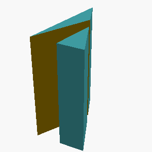
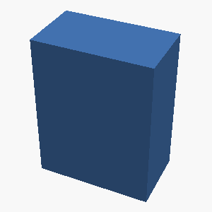
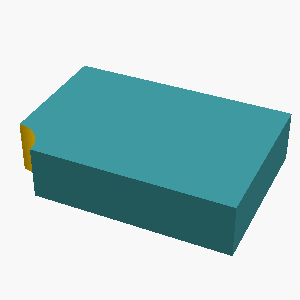

meta-llama/Llama-3.2-3B-Instruct
mean reward 0.087 · compile rate 12% · 120 valid rollouts. Blue = reference; green ≥ 0.9, orange ≥ 0.4, red below. Hover a tile for the generated OpenSCAD.
L1 · example 0 · mean 0.00 · max 0.00
A solid rectangular box 15mm wide, 15mm deep, and 35mm tall.

L2 · example 1 · mean 0.00 · max 0.00
A solid hexagonal prism 35mm tall, 60mm across the flats, with two flats parallel to the x axis, with a 12mm-radius hole drilled vertically through the center of the entire part. The part sits on the z=0 plane, centered on the Z axis.

L5 · example 2 · mean 0.23 · max 0.47
Create a triangular prism standing 45mm tall: its base is a right triangle with legs of 20mm (along X) and 30mm (along Y) meeting at the origin.


L4 · example 3 · mean 0.00 · max 0.00
A solid hexagonal prism 50mm tall, 40mm across the flats, with two flats parallel to the x axis, with a 3mm-radius hole drilled vertically through the center of the entire part; and a cone of base radius 12mm and height 20mm standing centered on its top face, apex up. The part sits on the z=0 plane, centered on the Z axis.

L1 · example 4 · mean 0.00 · max 0.00
A solid cylinder 25mm tall with a radius of 20mm, standing upright.

L5 · example 5 · mean 0.00 · max 0.00
Create a triangular prism standing 25mm tall: its base is a right triangle with legs of 45mm (along X) and 30mm (along Y) meeting at the origin.

L3 · example 6 · mean 0.00 · max 0.00
A solid hexagonal prism 25mm tall, 50mm across the flats, with two flats parallel to the x axis, with 4 holes of radius 2mm drilled vertically through it, evenly spaced on a circle of radius 18.1mm around the center, the first hole on the +X axis; and a 8mm-radius hole drilled vertically through the center of the entire part. The part sits on the z=0 plane, centered on the Z axis.

L4 · example 7 · mean 0.00 · max 0.00
A solid hexagonal prism 50mm tall, 35mm across the flats, with two flats parallel to the x axis, with hollowed out from the top into an open container with 5mm thick walls and floor. The part sits on the z=0 plane, centered on the Z axis.

L5 · example 8 · mean 0.00 · max 0.00
Create a 35mm-tall prism shaped like a plus sign, formed by two perpendicular 60mm x 20mm bars crossing at their midpoints.

L2 · example 9 · mean 0.00 · max 0.00
An open-top rectangular container with outer dimensions 55mm x 70mm x 55mm, wall and floor thickness 5mm.

L3 · example 10 · mean 0.00 · max 0.00
A stepped circular shaft standing upright, made of 2 stacked coaxial cylinders from bottom to top: a section of radius 35mm and height 25mm, then a section of radius 20mm and height 20mm. Each section is narrower than the one below it.

L5 · example 11 · mean 0.00 · max 0.00
A flat rectangular plate 90mm x 50mm and 11mm thick, with a rounded slot cut all the way through its center: the slot is 64mm long along the X direction and 12mm wide, with semicircular ends.

L1 · example 12 · mean 0.00 · max 0.00
A solid rectangular box 10mm wide, 55mm deep, and 60mm tall.

L2 · example 13 · mean 0.00 · max 0.00
A solid box 45mm x 25mm x 60mm with a rectangular notch 10mm wide and 13mm deep cut into the middle of its top face, running through the full depth of the box.

L5 · example 14 · mean 0.54 · max 0.54
A vertical prism 45mm tall whose footprint is a right triangle with one leg 35mm along the X axis and the other leg 20mm along the Y axis, right angle at the origin.


L4 · example 15 · mean 0.00 · max 0.00
A hexagonal prism (like a nut) 18mm tall, measuring 30mm across the flats, with a circular hole of radius 5mm drilled through its center along the axis.

L1 · example 16 · mean 1.00 · max 1.00
A solid cylinder 60mm tall with a radius of 5mm, standing upright.

 {
cylinder(h=60, r=5, $fn=64);
}")
L5 · example 17 · mean 0.00 · max 0.00
A solid torus (donut shape) lying flat on the table: the ring's centerline circle has a radius of 15mm and the circular tube cross-section has a radius of 5mm.

L3 · example 18 · mean 0.00 · max 0.00
A solid box 55mm wide (x), 50mm deep (y), and 25mm tall, with 3 holes of radius 2mm drilled vertically through it, evenly spaced on a circle of radius 18.1mm around the center, the first hole on the +X axis; and a horizontal hole of radius 3mm drilled along the X axis through the whole part at half its height, centered in Y. The part sits on the z=0 plane, centered on the Z axis.

L4 · example 19 · mean 0.00 · max 0.00
A gear-like disc 6mm thick with radius 25mm, with 6 rectangular teeth evenly spaced around its rim. Each tooth is 5mm wide and extends 6mm radially outward from the rim, spanning the full thickness of the disc.

L5 · example 20 · mean 0.00 · max 0.00
A flat rectangular plate 75mm x 45mm and 5mm thick, with a rounded slot cut all the way through its center: the slot is 46mm long along the X direction and 12mm wide, with semicircular ends.

L2 · example 21 · mean 0.00 · max 0.00
A solid box 60mm x 30mm x 55mm with a rectangular notch 14mm wide and 7mm deep cut into the middle of its top face, running through the full depth of the box.

L3 · example 22 · mean 0.00 · max 0.00
A solid hexagonal prism 20mm tall, 40mm across the flats, with two flats parallel to the x axis, with a hemispherical dome of radius 7mm centered on its top face; and 4 holes of radius 2mm drilled vertically through it, evenly spaced on a circle of radius 13.1mm around the center, the first hole on the +X axis. The part sits on the z=0 plane, centered on the Z axis.

L5 · example 23 · mean 0.00 · max 0.00
Create a D-shaft: a 50mm-tall cylinder of radius 20mm whose +X side is sliced off by a vertical plane 13mm from the axis, leaving a flat running the full height.

L1 · example 24 · mean 0.00 · max 0.00
A solid rectangular box 65mm wide, 50mm deep, and 20mm tall.

L2 · example 25 · mean 0.00 · max 0.00
A solid box 30mm x 30mm x 30mm with a rectangular notch 10mm wide and 5mm deep cut into the middle of its top face, running through the full depth of the box.

L5 · example 26 · mean 0.85 · max 0.85
Create a 65x45x15mm block with a centered vertical through-hole of radius 5mm, counterbored from the top face to radius 9mm over a depth of 9mm.


L4 · example 27 · mean 0.00 · max 0.00
A hexagonal prism (like a nut) 10mm tall, measuring 30mm across the flats, with a circular hole of radius 5mm drilled through its center along the axis.

L1 · example 28 · mean 0.00 · max 0.00
A solid rectangular box 40mm wide, 40mm deep, and 20mm tall.

L5 · example 29 · mean 0.00 · max 0.00
A plus-sign-shaped prism 15mm tall: two rectangular bars, each 65mm long and 10mm wide, cross at right angles at their centers (one along X, one along Y), centered on the Z axis.